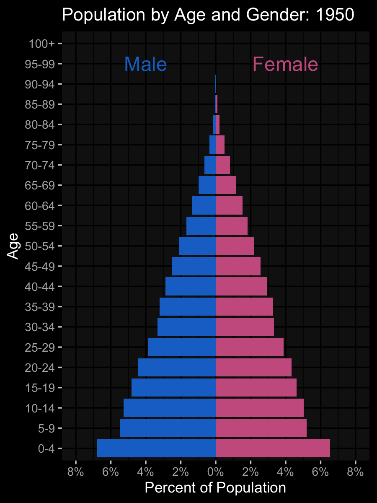
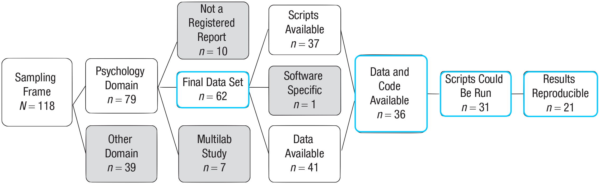
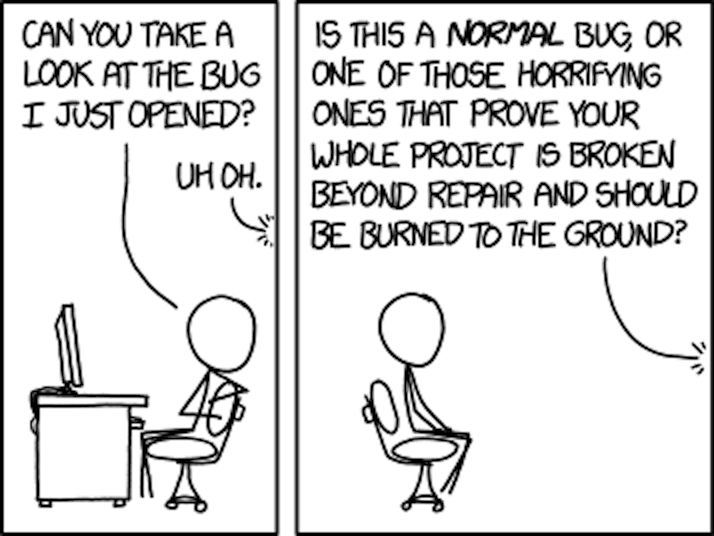
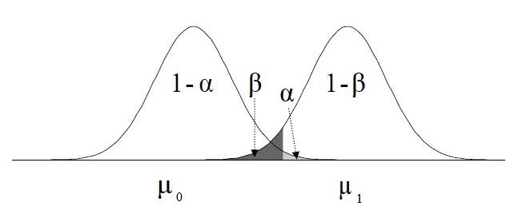
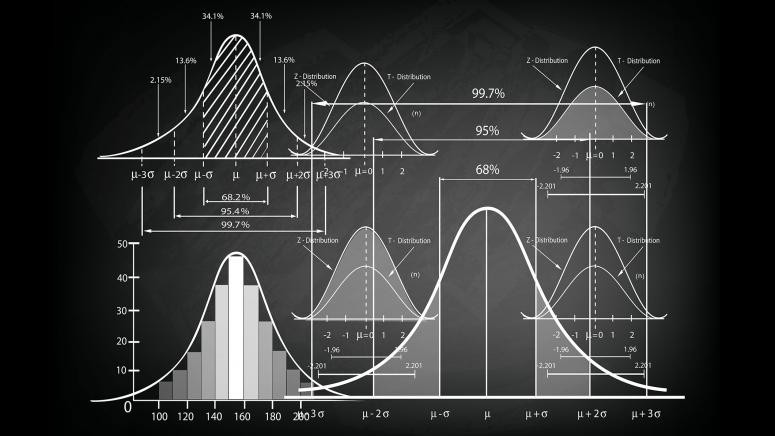
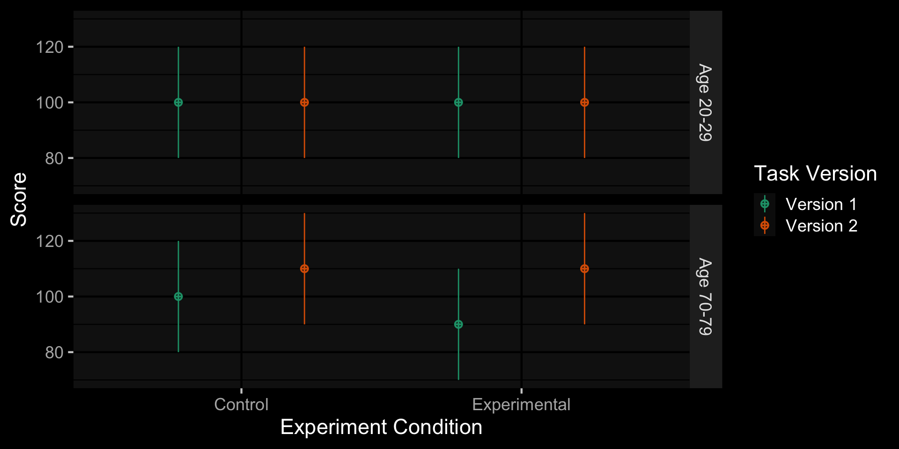
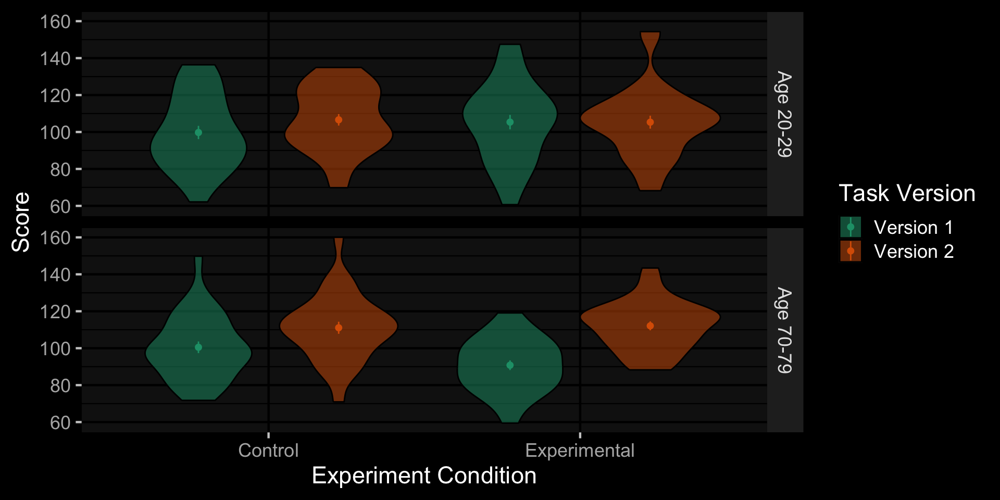

ggplot(pop_data, aes(age, pcnt2, fill = sex)) +
geom_col(show.legend = FALSE) +
coord_flip(ylim = c(-.08, .08)) +
labs(title = "Population by Age and Gender:
{floor(frame_time/5)*5}",
x = "Age", y = "Percent of Population") +
scale_fill_manual(
values = c("hotpink3", "dodgerblue3")) +
scale_y_continuous(
breaks = seq(-.08, .08, .02),
labels = abs(seq(-8, 8, 2)) |> paste0("%")) +
annotate("text", label = "Female", size = 8,
color = "hotpink3", x = 20, y = .05) +
annotate("text", label = "Male", size = 8,
color = "dodgerblue3", x = 20, y = -.05) +
gganimate::transition_time(year)Data Simulation and Code Review
debruine.github.io/talks/CompCogSci-2023/
Lisa DeBruine
Abstract
Research transparency and integrity benefit greatly from computationally reproducible code, and there is an increasing emphasis on learning the skills to code. However, there hasn’t been as much emphasis on learning the skills to check code. People cite a lack of time, expertise, and incentives as reasons that they don’t ask others to review their research code, but the most commonly cited reason was embarrassment for others to see their code.
Being able to simulate data allows you to prep analysis scripts for pre-registration, calculate power and sensitivity for analyses that don’t have empirical methods, create reproducible examples when your data are too big or confidential to share, enhance your understanding of statistical concepts, and create demo data for teaching and tutorials.
Why Code?
Plots!


Data Simulation
Being able to simulate data allows you to:
- prep analysis scripts for pre-registration
- calculate power and sensitivity for analyses that don’t have empirical methods
- create reproducible examples when your data are too big or confidential to share
- enhance your understanding of statistical concepts
- create demo data for teaching and tutorials
Error Detection
An analysis by Nuijten et al. (2016) of over 250K p-values reported in 8 major psych journals from 1985 to 2013 found that:
- half the papers had at least one inconsistent p-value
- 1/8 of papers had errors that could affect conclusions
- errors more likely to be erroneously significant than not
Analysis Reproducibility
Of 35 articles published in Cognition with usable data (but no code, Hardwicke et al. (2018) found:
- only 11 could be reproduced independently
- 11 were reproducible with the original authors’ help
- 13 were not reproducible even by the original authors
Code Reproducibility
Of 62 Registered Reports in psychology published from 2014–2018, 36 had data and analysis code, 31 could be run, and 21 reproduced all the main results (Obels et al, 2020)
What is Code Review?
The process of methodically and systematically checking over code–your own or someone else’s–after it has been written.
- Is the code is legible and clear?
- Is the analysis reproducible?
- Are other outputs reproducible?
- Does the code do what was intended?
- Does the code follows best practices?
Barriers to Doing Code Review
Technical
- Lack of skill
- No guide
Incentive
- No time
- Not expected
Social
- Expectations
- Fear of judgement
Goals of Code Review
The specific goals of any code review will depend on the stage in the research process at which it is being done, the expertise of the coder and reviewer, and the amount of time available.
In this talk, we’ll focus on pre-submission code review by colleagues.
Does it run?
- Requires the least expertise and time
- Can result in a substantial improvement
- Run on a different computer than coded on
- Ideally, access from the same place users or reviewers will
- Note if you get any errors
- If you have the expertise to fix them, make and note the fix, then try again
Is it reproducible?
- Requires more time, but not expertise
- The coder can make this a lot easier for the reviewer
- Anyone running the code should get the same outputs
- Outputs include: Analysis Results; Plots; Tables
- Check for a seed when random values are used
- Assess how straightforward it is to do this check
Is it auditable and understandable?
- Requires a bit more expertise and time
- Is the code well-organised?
- Headers make a complex script much more accessible
- Can you find corresponding parts of the outputs or manuscript?
- Are all parts of the process available (e.g., generating analysed data from raw data)?
- Literate programming makes code more understandable.
Does it follow best practices?
- Requires substantial expertise and time
- General coding principles that serve to reduce the scope for errors and make understanding code easier, for example:
- Do the variable names make sense?
- Is there repeated code (DRY) or values defined in multiple places (SPOT)?
- Are outputs of long processes saved and loaded from file?
- Are there sense checks or unit tests where appropriate?
Is it correct and appropriate?
- Requires substantial expertise and time
- Is the code actually doing what was intended?
- Is what was intended correct?
- Detect logical problems (e.g., filtering in instead of out)
- May require domain expertise to detect some problems (e.g., knowing that a certain questionnaire has reverse-coded items)
Not Goals
- Debugging
- Code help
- Statistical help

Key Concepts
A review package should include:
- A README file that describes the project; specifies credit and licensing
- Any outputs that the reviewers should try to reproduce
- All data used to create the outputs to be reproduced
- All code necessary to recreate the outputs
- A main script that runs any subscripts in the relevant order
Project organisation
- Make sure all files used in the code are in a single directory that is the working directory
- Use RStudio projects to make this easy
- Include a README that explains the purpose of all files
- Danielle Navarro’s Project structure
File paths
All file references should use relative paths, not absolute paths.
Absolute Path 👎
Relative Path 👍
Naming things
Name files and code objects so both people and computers can easily find things.
- File and directory names should only contain letters, numbers, dashes, and underscores, with a full stop (.) between the file name and extension (no spaces!) e.g.,
DeBruine_code-review_2022-10-19.Rmd - Be consistent with capitalisation, punctuation, and order
- Use a pattern that alphabetises in a sensible order
- Use YYYY-MM-DD format for dates
- Jenny Bryan’s Naming Things
Data documentation
Overview
- authors
- date and location
- sampling/inclusion criteria
- instruments used
- updates to the data
- license
Variable information
- Names (i.e., the column names)
- Labels/description
- Codings (e.g., 1 = always, 5 = never)
- Data type (e.g., binary, continuous)
- Descriptives (e.g., min, max)
- Data units (e.g., mg/L, months)
- Missing values (e.g., NA, 999)
Literate coding
An approach to programming that focuses on the creation of a document containing a mix of human-readable narrative text and machine-readable computer code.
- R Markdown, Quarto, or Jupyter notebooks
Single point of truth (SPOT)
With repeated numbers
With parameter variables
Don’t repeat yourself (DRY)
With repeated code
With a function
Unit Tests
library(testthat)
# check the data has the expected number of rows
expect_equal(
object = nrow(sim_data),
expected = 240
)Error in eval(expr, envir, enclos): object 'sim_data' not found# check that a column is a factor with the expected levels
expect_equivalent(
object = levels(sim_data$species),
expected = c("cat", "dog", "ferret")
)Error in eval(expr, envir, enclos): object 'sim_data' not foundCode Review Guide
Why Simulate Data?
Pre-Registration

Prep analysis scripts for pre-registration
Power
Calculate power and sensitivity for analyses that don’t have empirical methods
Reproducible Examples
Create reproducible examples when your data are too big or confidential to share
Enhance Understanding
Enhance your understanding of statistical concepts
Teaching Data
Create demo data for teaching and tutorials
Faux (tinyurl.com/faux-app)


Faux Code
sim_data <- faux::sim_design(
within = list(version = c(V1 = "Version 1", V2 = "Version 2"),
condition = c(ctl = "Control", exp = "Experimental")),
between = list(age_group = c(young = "Age 20-29", old = "Age 70-79")),
n = 30,
mu = c(100, 100, 100, 100, 100, 90, 110, 110),
sd = 20,
r = 0.5,
dv = c(score = "Score"),
id = c(id = "Subject ID"),
vardesc = list(version = "Task Version",
condition = "Experiment Condition",
age_group = "Age Group"),
long = TRUE
)Faux Design Parameters
# sim_data[c(1, 31, 61, 91, 121, 151, 181, 211), ] |>
get_design(sim_data)$params |>
gt() |>
gtExtras::gt_theme_dark(table.font.size = px(20)) |>
tab_style(style = cell_text(size = px(25)),
locations = cells_column_labels(everything()))| age_group | version | condition | V1_ctl | V1_exp | V2_ctl | V2_exp | n | mu | sd |
|---|---|---|---|---|---|---|---|---|---|
| young | V1 | ctl | 1.0 | 0.5 | 0.5 | 0.5 | 30 | 100 | 20 |
| young | V1 | exp | 0.5 | 1.0 | 0.5 | 0.5 | 30 | 100 | 20 |
| young | V2 | ctl | 0.5 | 0.5 | 1.0 | 0.5 | 30 | 100 | 20 |
| young | V2 | exp | 0.5 | 0.5 | 0.5 | 1.0 | 30 | 100 | 20 |
| old | V1 | ctl | 1.0 | 0.5 | 0.5 | 0.5 | 30 | 100 | 20 |
| old | V1 | exp | 0.5 | 1.0 | 0.5 | 0.5 | 30 | 90 | 20 |
| old | V2 | ctl | 0.5 | 0.5 | 1.0 | 0.5 | 30 | 110 | 20 |
| old | V2 | exp | 0.5 | 0.5 | 0.5 | 1.0 | 30 | 110 | 20 |
Faux Design Plot
Faux Data Plot
Power Simulation: Replicate Data
sim_data <- faux::sim_design(
within = list(version = c(V1 = "Version 1", V2 = "Version 2"),
condition = c(ctl = "Control", exp = "Experimental")),
between = list(age_group = c(young = "Age 20-29", old = "Age 70-79")),
n = 30,
mu = c(100, 100, 100, 100, 100, 90, 110, 110),
sd = 20,
r = 0.5,
dv = c(score = "Score"),
id = c(id = "Subject ID"),
vardesc = list(version = "Task Version",
condition = "Experiment Condition",
age_group = "Age Group"),
long = TRUE,
rep = 100
)Power Simulation: Analysis Function
# setup options to avoid annoying afex message & run faster
afex::set_sum_contrasts()
afex::afex_options(include_aov = FALSE)
analysis <- function(data) {
a <- afex::aov_ez(
id = "id",
dv = "score",
between = "age_group",
within = c("version", "condition"),
data = data)
as_tibble(a$anova_table, rownames = "term") |>
rename(p = `Pr(>F)`)
}Power Simulation: Analysis Result
analysis(sim_data$data[[1]]) |>
gt() |>
gt::fmt_number(MSE, decimals = 1) |>
gt::fmt_number(F, decimals = 2) |>
gt::fmt_number(ges:p, decimals = 3) |>
gtExtras::gt_theme_dark(table.font.size = px(15)) |>
tab_style(style = cell_text(size = px(15)),
locations = cells_column_labels(everything()))| term | num Df | den Df | MSE | F | ges | p |
|---|---|---|---|---|---|---|
| age_group | 1 | 58 | 807.6 | 0.06 | 0.001 | 0.805 |
| version | 1 | 58 | 211.2 | 10.90 | 0.027 | 0.002 |
| age_group:version | 1 | 58 | 211.2 | 17.77 | 0.044 | 0.000 |
| condition | 1 | 58 | 178.5 | 4.33 | 0.009 | 0.042 |
| age_group:condition | 1 | 58 | 178.5 | 5.53 | 0.012 | 0.022 |
| version:condition | 1 | 58 | 223.4 | 0.93 | 0.003 | 0.339 |
| age_group:version:condition | 1 | 58 | 223.4 | 3.16 | 0.009 | 0.080 |
Power Simulation
power |>
gt() |>
gtExtras::gt_theme_dark(table.font.size = px(15)) |>
tab_style(style = cell_text(size = px(20)),
locations = cells_column_labels(everything()))| term | power |
|---|---|
| age_group | 0.09 |
| age_group:condition | 0.29 |
| age_group:version | 0.96 |
| age_group:version:condition | 0.31 |
| condition | 0.32 |
| version | 1.00 |
| version:condition | 0.27 |
Further Resources


Thank You!
debruine.github.io/talks/CompCogSci-2023/ (code)